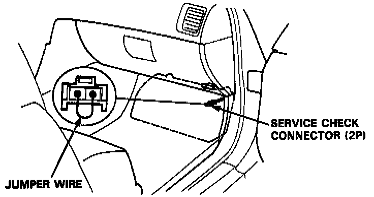
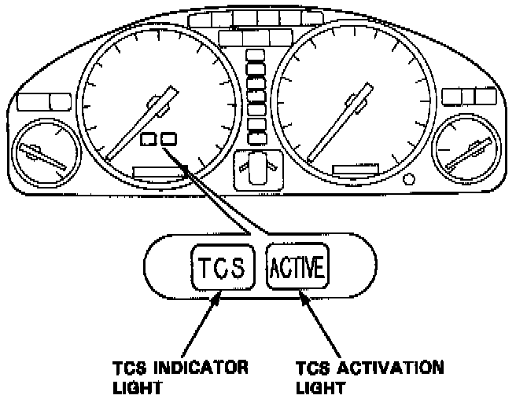
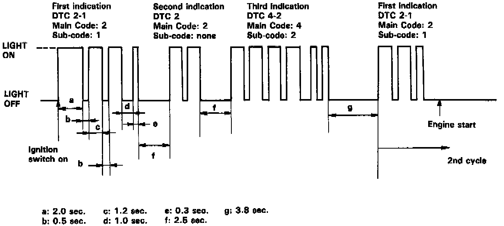

Displaying & Reading Trouble Codes
NOTE: After the engine is started, the TCS indicator light goes off and TCS switch indicator light comes on to indicate that the system is ready. If there is any abnormality in the system, the TCS indicator light stays on. Once the TCS switch is pushed, however, the TCS indicator light comes on and TCS switch indicator light goes off to indicate that the system is off.Temporary Driving Conditions:
1. The TCS indicator light will come on and the control unit memorizes the Diagnostic Trouble Code (DTC) under certain temporary conditions:
- The spare tire is installed, or a tire of the improper size is installed.
- The tire pressures are not correct.
2. If the TCS indicator light does not come back on after correcting the tire or tire pressure problem, the system is OK.
NOTE: Remove the ABS B2 (15 A) fuse for at least three seconds to clear the code from the TCS control unit memory.
TCS Diagnostic Trouble Code (DTC) Indication:
1. Stop the engine.
2. Turn the ignition switch on and confirm that the TCS indicator light comes on.
3. Turn the ignition switch off.

4. Connect the two terminals of the Service Check Connector with a jumper wire.
5. Turn the ignition switch on, but do not start the engine.

6. Record the blinking frequency of the TCS indicator light. The blinking frequency indicates the code. Long blinks indicate the main code; short blinks indicate the sub-code.
7. Refer to the Trouble Code Descriptions for repair information.

NOTE:
- The TCS control unit has three memory registers. When a problem occurs, the control unit stores the code in the first memory register. If another problem occurs, the control unit moves the first code to the next memory register and stores the second code in the first register. If there's a third problem occurrence, the two existing codes are moved up one register and the third code is stored in the first register. If problems continue to occur, the oldest code is moved out of the last register and lost, and the most recent code is stored in the first register.
- The TCS indicator light will not come on again after the engine starts unless another problem occurrence is detected. However, there will still be a code stored in the control unit's memory.
- After the repair is completed, disconnect the jumper wire from the Service Check connector and remove the ABS B2 (15 A) fuse from the under-hood fuse/relay box for at least 3 seconds to erase the control unit's memory.
- The control unit's memory is erased if the connector is disconnected from the control unit, or if the control unit is removed from the car.
- After recording the main and sub-code (if applicable), refer to Trouble Code Descriptions.